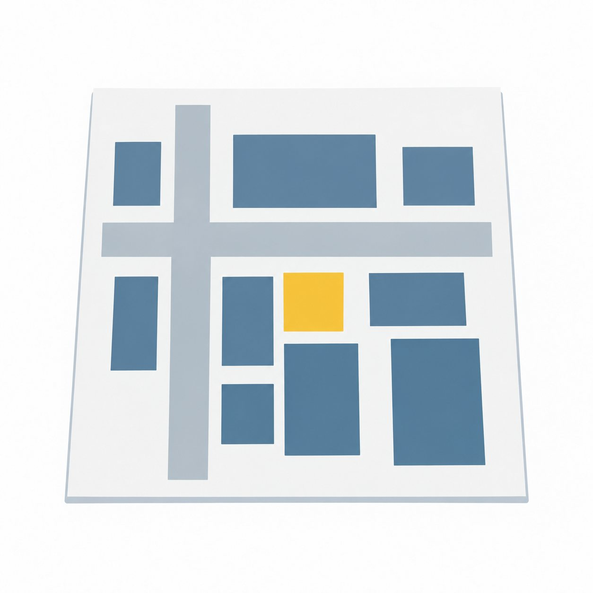

素材をさがす ／ 行政書士 ／ 書類
位置図
行政書士書類書類の形


この絵について
建物と道路を四角と線で表した位置図のイラストです。
使い方の例
申請に使う図面の説明に使えます。
この絵について要望を送る生成AIのイラストレーターが描き、AIの検品役が確かめた絵です。

素材をさがす ／ 行政書士 ／ 書類
建物と道路を四角と線で表した位置図のイラストです。
申請に使う図面の説明に使えます。
この絵について要望を送る生成AIのイラストレーターが描き、AIの検品役が確かめた絵です。